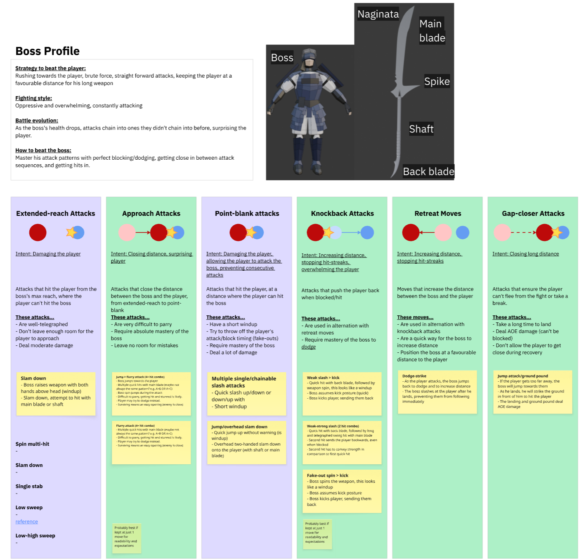
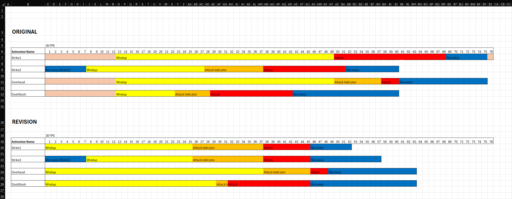
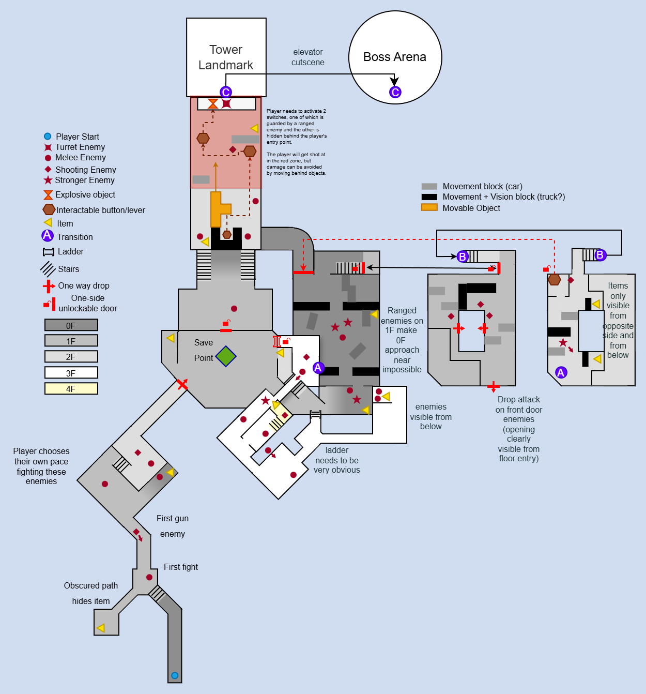
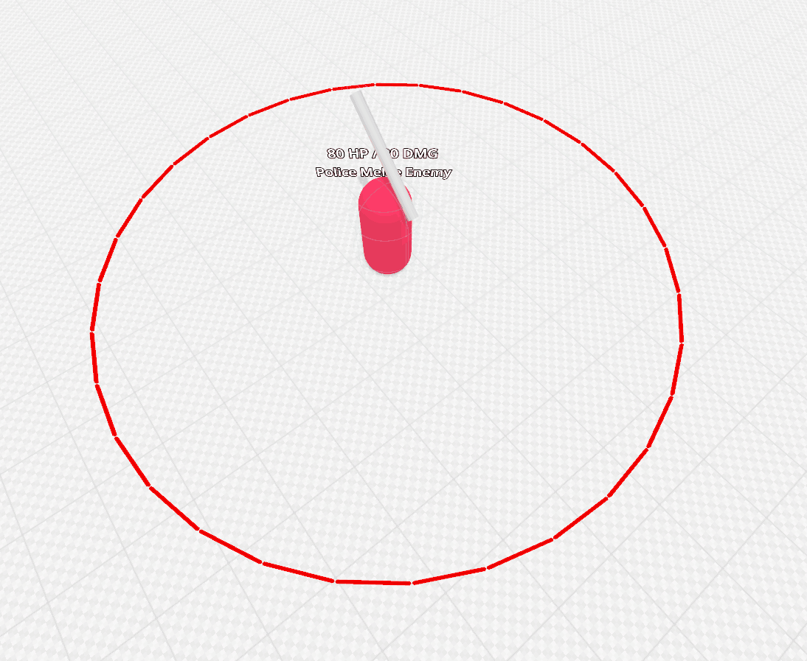

Swordcaster (ongoing)
Release date:
t.b.d. (ongoing)
Development time:
3 months part-time, and counting
Project type:
Passion project, team of 2
t.b.d. (ongoing)
Development time:
3 months part-time, and counting
Project type:
Passion project, team of 2
Description
An action/combat game with Souls-inspired gameplay, originating from a shared exercise with an animation artist to create an impactful animation-based boss battle.So far, I created a tool to speed up animation iteration, a third person player character, a prototype boss fight, a complete level greybox (L2).
Player Character (3C's)
Capturing the fight
I added a wide hysterisis to the camera when locked onto an enemy, allowing it to capture the fight almost from the side, giving the player a much better view of the fight than with a straight-on camera.
Boss Behaviour

Boss Profile/Strategy
First, I decided what the player should do to beat the boss. Since it's the game's only boss, the player has to achieve> "absolute mastery of all combat mechanics".
I designed a coherrent strategy the boss uses to beat the player, which leads to interesting gameplay:
- The boss tries to keep the player at a distance favourable for his long weapon
- The boss occasionally closes in with a very difficult attack, leaving room for punish attacks if succesfully parried
- The player has to get close to damage the boss, managing his attacks properly
- The fight's spacing alternates between point-blank and extended-reach engagement, adding variety
Greybox Boss Prototype
asdasid adaosd pasod ksapd kpsakd psad ksapkpkapkdpaks dspakd sak dAnimation Pipeline Tool

Editor Tool
To allow a designer (me) to quickly iterate upon blockout/keyframe animations inside Godot, I created the "Batch Transposer" tool:Divide your animation into named sections, assign a length to each section, and bake this data. Then, edit section lengths to scale/transpose the defined animation sections.
So far it's proven especially useful for tweaking the windup length of an attack based on player feedback, without constantly having to go back and forth into animation software, saving valuable time.
This information is bundled into a before/after Excel sheet, and passed back to the animator.
Level Design

Top-down Map
As the first step in my level design process, I wrote a level synopsis and created a top-down map, together with a level synopsis and criteria of success:- The player feels like they have an understanding of the main mechanics
- The player feels a sense of progression in the level segments as they traverse the level
- The player feels rewarded for exploring the level
- The player feels relief once the shortcut is opened
Technical Placeholders
To make the greybox fully playable, I created placeholders for enemies, items, doors and ladders.The enemy placeholder, though simple, conveys:
- Detection range
- Size/hitbox
- Health
- Damage
- Attack range
- Attack pattern/frequency
- Attack readability

Greybox
Using the top-down map and level synopsis, I blocked out the level.Some sections had to be redesigned to account for verticality and sightlines, which made me realize a top-down map should primarily focus on conveying intent and should not be a precise map layout.
The initial greybox was far from perfect. Through in-person playtesting I was able to identify and resolve many issues, especially related to spatial readability and encounter pacing.